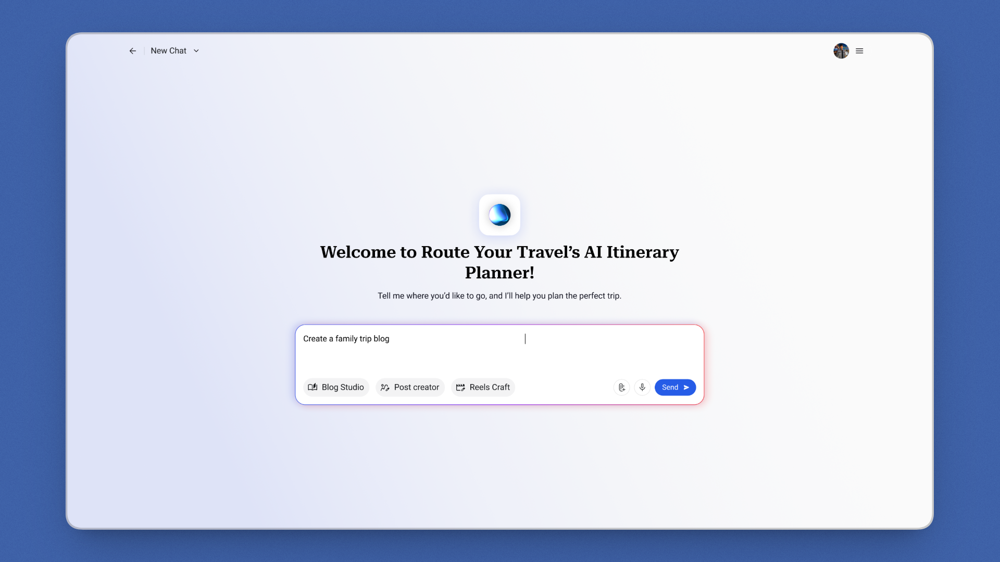
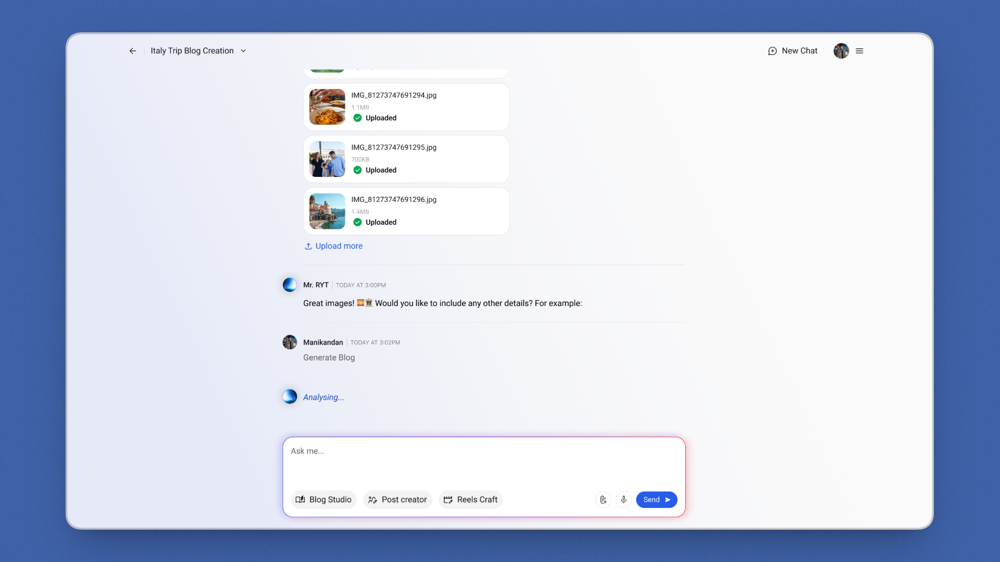
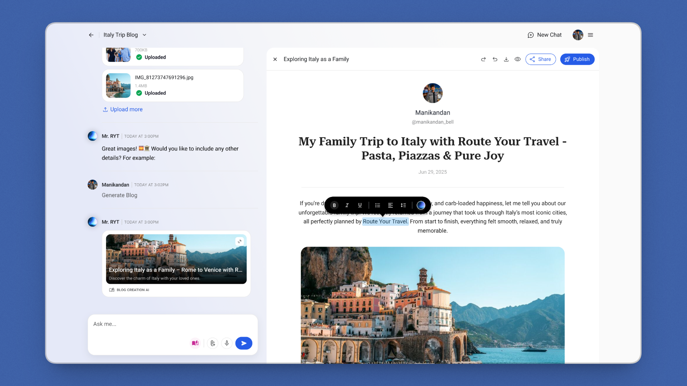
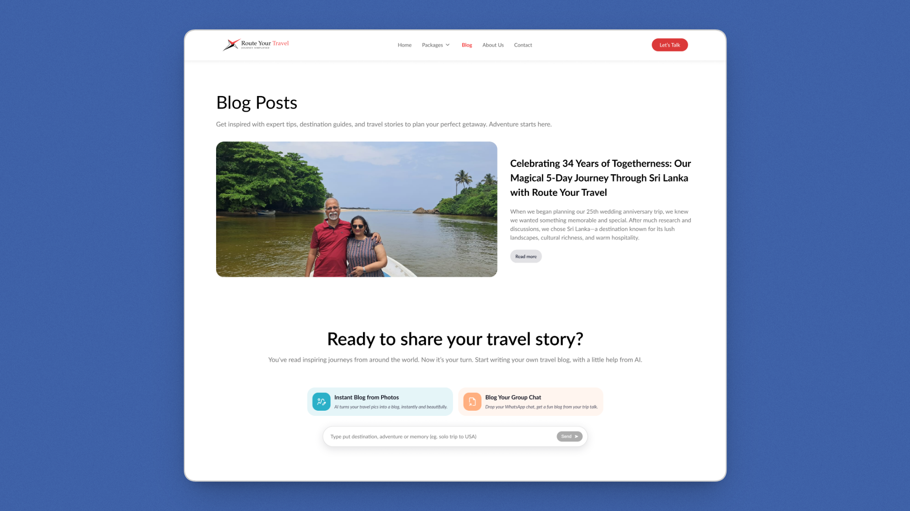
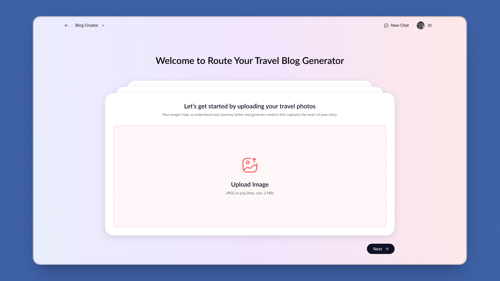
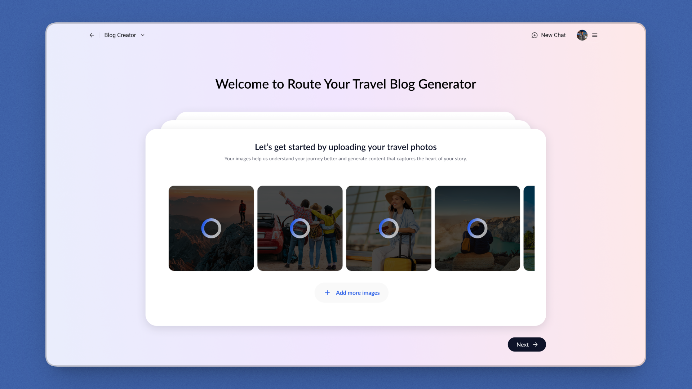
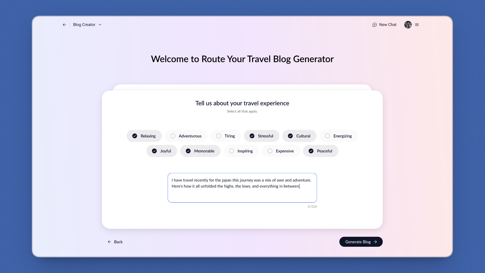
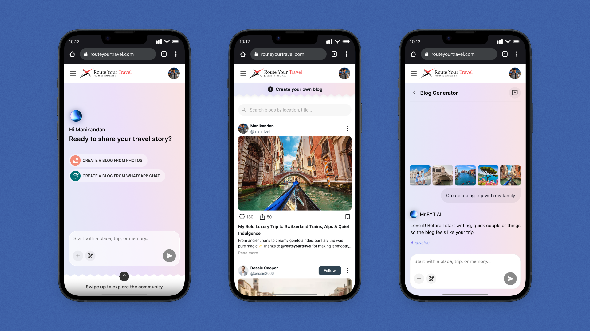
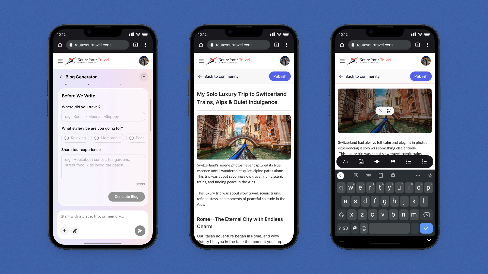
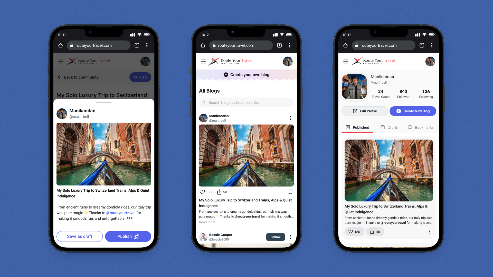

Neartail - Website Builder
2024Build a real business website, not just a form link.
The first user-facing surface of Mr. RYT turning travel memories into stories the marketing team can actually publish.


Website + in-product generator
AI Generator: ongoing
Founders, 2 intern devs, 1 design peer
Imagine you just got back from a trip RYT planned -
You spent ten days driving through Sri Lanka with your family. Your phone has 600 photos. Your WhatsApp group chat has hundreds of messages inside jokes, moments, the small disasters that became the funny parts.
You'd happily share the story. RYT's marketing team would happily publish it. But sitting down to write a blog post feels like homework you didn't sign up for. So the photos stay in the camera roll, and the story stays in the chat.
For the marketing team, this meant a slow, manual content pipeline. Every published blog travelled through the same handoffs:
Contact a recent customer asking for a write-up.
Customer agrees, then doesn't get to it for weeks. Most don't reply.
When content is needed, someone on the team writes it from scratch using interview notes.
Paste into the CMS, source cover photos, fix layout to match the existing blog page.
One blog every few weeks. Not a content engine.
At first, it looks like a writing problem customers don't write blogs. It's actually an input problem. They have photos, chats, and a story in their head just no easy way to hand it over.
“What if a customer didn't have to write a single sentence and still ended up with a blog they'd be willing to publish under their own name?”
The generator ingests three input modes photos (with EXIF location and visual vibe extraction), WhatsApp chats (extracting characters, timeline, tone markers), and prompts (free-form text plus optional mood tags). Runs them through Mr. RYT's AI engine. Returns one consistent publishable blog. Same template, same author card, same Publish action regardless of input.
The generator needed to work for two groups of people with almost nothing in common:
Both groups had to land in the same place a publishable blog inside RYT's existing visual system, ready for the marketing team to curate. The constraint was real: any blog the generator produces has to slot into the same blog page where the five hand-written customer stories already live, without retrofitting.
One AI engine, one publish destination, one visual system but two completely different audiences arriving with different expectations. The flows had to diverge at the entry, not at the output.
The generator takes three kinds of raw material and produces a single, consistent output. The unification was deliberate three inputs sound like three products, three editing surfaces, three publish flows. By collapsing them into one output template, the AI absorbs the difference.
The model extracts both location signals (from EXIF metadata where present) and visual vibe (food close-ups vs. landscapes vs. group shots vs. architecture) so a folder of photos becomes a sequence of moments the blog can be structured around.
The model pulls out characters (who's in the trip), timeline (which day was what), and tone markers inside jokes, recurring phrases, complaints. The output reads like the group, not like a brochure.
Free-form text plus optional mood tags. Used when the user has no photos to upload they just want to write about the trip and have the AI structure it into a blog.
However the user came in, they walk out with the same thing: a blog they could publish without editing further. Same template, same author card, same rich-text editor, same Publish action.
The chat surface borrows the familiar shape of a chat product without trying to be ChatGPT. Mr. RYT has a name, an avatar, and a tone that's helpful without being chirpy. The conversation lives at the centre with generous breathing room closer to a doc-with-a-helper than a customer-support bot.
“Mr. RYT” instead of “Assistant” was both a brand decision and a warmth decision. The brand already markets the AI as a “buddy” naming reinforces the partnership framing. It also gives the user a consistent character to talk to across the (eventual) wider Mr. RYT product surface.
The chips at the bottom of the input Blog Studio, Post creator, Reels Craft frame Mr. RYT as a multi-modal content engine. Today only Blog Studio is in design; Post Creator and Reels Craft are future scope, not yet started. Showing them now hints at the product's direction without overcommitting.
While the AI generates, Mr. RYT shows a quiet italic “Analysing…” not a spinner, not a fake percentage. The serif italic borrows from the rest of the brand and signals craft rather than computation.



The guided flow lives behind the public blog page. A visitor scrolls past hand-picked customer stories, hits the “Ready to share your travel story?” section, picks a CTA card based on what they have (photos or chat export), and lands inside a three-step funnel.
Empty state is a low-anxiety upload zone. After the first photo, the surface flips to a horizontal carousel with focus rings on each thumbnail a small visual confirmation that “this one's in.” No status text required; the ring is the receipt.
Pre-set mood tags (Relaxing, Adventurous, Cultural, Memorable, Joyful, Peaceful, etc.) give the AI structured emotional context without making the user think. Textarea capped at 500 characters with a counter signals “we want a sentence or two, not a novel” and keeps the AI prompt window tight.
“Generate Blog” hands off to the same AI engine as the chat flow and surfaces the same output. From here, the experience is identical regardless of which flow brought the user in.




The output is the moment both flows converge. The chat-flow user clicks the blog card preview; it expands into the editor. The guided-flow user hits “Generate Blog”; the same editor opens. Same author profile, same rich-text toolbar (bold / italic / underline / list / alignment / line-height / colour), same cover image, same Share / Publish actions in the top-right.
The blog publishes into the same visual system as the five customer stories already live on the RYT site. When the marketing team picks a generated story to feature, it slots in alongside hand-written ones without retrofitting.
Three input modes sound like three products. Collapsing them into one output template means the AI absorbs the difference. The user only ever has to learn the editor once.
I designed desktop-first and have started on mobile. Mobile screens will be added below as they're finalised.



The generator's user-facing frontend isn't deployed yet. So this section won't claim user-impact metrics it doesn't have. What's real today are Internal Metrics (process-level design iteration, time to prototype, dev handoff) and Design Metrics (output-level flows, screens, modes designed). Product and Business metrics are reserved for after launch, when they can be measured honestly.
Days from kickoff to live website (Jun 29 – Jul 25, 2025) design + 2 intern devs led, full-stack build.

AI input modes consolidated into one publishable output template photos, WhatsApp chats, prompts.
Entry flows designed (chat + guided form) feeding a single AI engine, split by user fluency, not by feature.
Real customer blogs already live on the website the visual system the generator publishes into.
Internal itinerary builder shipped to the RYT team designed by a peer, supported on visual system.

Generator launch metrics: Time to First Output, Onboarding Completion Rate, and Form Abandonment Rate to be measured post-launch.
My instinct was a chat-first generator. It worked for engaged users and broke for cold ones. The lesson wasn't “chat is wrong”. It was that one entry point can't carry two mental models. The second flow wasn't a redesign; it was an addition. That distinction mattered for keeping the project on schedule.
Three input modes sound like three products to maintain. By collapsing them into one publishable blog format, the AI absorbed the difference. The user learned one editor, the marketing team got one consistent surface, the dev team built one publishing pipeline. Constraint-as-product.
The website went live first in 27 days, and that turned out to matter. The generator isn't designing into a vacuum; it's designing into a real visual system, a real blog page with five customer stories already live, a real marketing team's workflow. Knowing the surface ahead of the engine kept the generator's design grounded.
“Mr. RYT” instead of “Assistant” cost nothing to ship and changed how the product feels. It gives users a consistent character across (eventually) the broader Mr. RYT surface trip planning, content, recommendations. Naming is the cheapest way to turn a feature into a product.
Shipping a website in 27 days with two intern developers required me to design with their build capacity in mind, not against it. I learned to scope features by what the team could ship, not by what looked best in Figma. The website went live because of that constraint, not in spite of it.